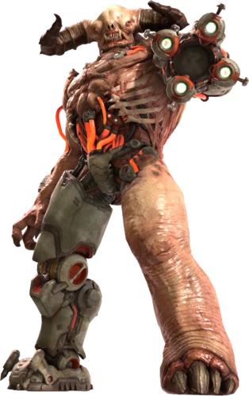

Tyrant
Demon Lords to the black soul pits of Babel, the Tyrants have long served as wardens and slavers of the infernal pits. Weaponized and cybernetically altered by the UAC, the Tyrants are tasked with overseeing the collection and extraction of sin-branded souls from the mortal world, their role in Hell ordained by the unholy sigil of the Elder Hell-gods. A sadistic master of lesser demons, the Tyrants are feared for their cruelty and malice.
The Tyrant is a recreation of the original Doom's Cyberdemon rather than the more bulky and heavy-set variant encountered in the previous game. It is tan in color, with long curving black horns and two small, beady golden eyes set very far apart from each other. The Tyrant has a flat face with flush nostrils, and lacks any kind of lips, exposing sharp teeth with two large upward-facing tusks as the lower canines. It lacks the split jaw found on the Doom 2016 version of the monster.
